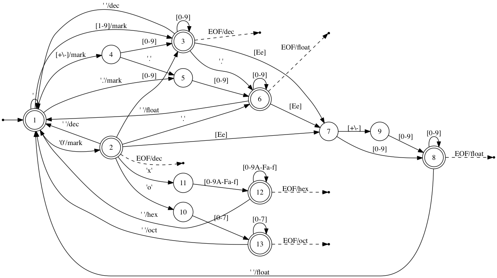
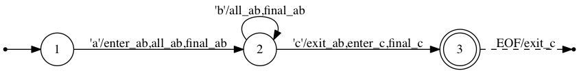

Automa.jl
Overview
Automa.jl is a package for generating finite-state machines (FSMs) and tokenizers in Julia.
The following code is an example of tokenizing various kinds of numeric literals in Julia.
import Automa
import Automa.RegExp: @re_str
const re = Automa.RegExp
# Describe patterns in regular expression.
oct = re"0o[0-7]+"
dec = re"[-+]?[0-9]+"
hex = re"0x[0-9A-Fa-f]+"
prefloat = re"[-+]?([0-9]+\.[0-9]*|[0-9]*\.[0-9]+)"
float = prefloat | re.cat(prefloat | re"[-+]?[0-9]+", re"[eE][-+]?[0-9]+")
number = oct | dec | hex | float
numbers = re.cat(re.opt(number), re.rep(re" +" * number), re" *")
# Register action names to regular expressions.
number.actions[:enter] = [:mark]
oct.actions[:exit] = [:oct]
dec.actions[:exit] = [:dec]
hex.actions[:exit] = [:hex]
float.actions[:exit] = [:float]
# Compile a finite-state machine.
machine = Automa.compile(numbers)
# This generates a SVG file to visualize the state machine.
# write("numbers.dot", Automa.machine2dot(machine))
# run(`dot -Tpng -o numbers.png numbers.dot`)
# Bind an action code for each action name.
actions = Dict(
:mark => :(mark = p),
:oct => :(emit(:oct)),
:dec => :(emit(:dec)),
:hex => :(emit(:hex)),
:float => :(emit(:float)),
)
# Generate a tokenizing function from the machine.
context = Automa.CodeGenContext()
@eval function tokenize(data::String)
tokens = Tuple{Symbol,String}[]
mark = 0
$(Automa.generate_init_code(context, machine))
p_end = p_eof = endof(data)
emit(kind) = push!(tokens, (kind, data[mark:p-1]))
$(Automa.generate_exec_code(context, machine, actions))
return tokens, cs == 0 ? :ok : cs < 0 ? :error : :incomplete
end
tokens, status = tokenize("1 0x0123BEEF 0o754 3.14 -1e4 +6.022045e23")Finally, space-separated numbers are tokenized as follows:
julia> tokens
6-element Array{Tuple{Symbol,String},1}:
(:dec,"1")
(:hex,"0x0123BEEF")
(:oct,"0o754")
(:float,"3.14")
(:float,"1e-4")
(:float,"+6.022045e23")
julia> status
:ok

Automa.jl is composed of three elements: regular expressions, compilers, and code generators. Regular expressions are used to specify patterns that you want to match and bind actions to. A regular expression can be built using APIs provided from the Automa.RegExp module. The regular expression with actions is then fed to a compiler function that creates a finite state machine and optimizes it to minimize the number of states. Finally, the machine object is used to generate Julia code that can be spliced into functions.
Machines are byte-oriented in a sense that input data fed into a machine is a sequence of bytes. The generated code of a machine reads input data byte by byte and updates a current state variable based on transition rules defined by regular expressions. If one or more actions are associated to a state transition they will be executed before reading a next byte. If no transition rule is found for a byte of a specific state the machine sets the current state to an error value, stops executing, and breaks from a loop.
Regular expressions
Regular expressions in Automa.jl is somewhat more restricted than usual regular expressions in Julia. Some features like lookahead or backreference are not provided. In Automa.jl, re"..." is used instead of r"..." because these are different regular expressions. However, the syntax of Automa.jl's regular expressions is a subset of Julia's ones and hence it would be already familiar. Some examples are shown below:
decimal = re"[-+]?[0-9]+"
keyword = re"if|else|while|end"
identifier = re"[A-Za-z_][0-9A-Za-z_]*"An important feature of regular expressions is composition of (sub-) regular expressions. One or more regular expressions can be composed using following functions:
| Function | Alias | Meaning |
|---|---|---|
cat(re...) | * | concatenation |
alt(re1, re2...) | | | alternation |
rep(re) | zero or more repetition | |
rep1(re) | one or more repetition | |
opt(re) | zero or one repetition | |
isec(re1, re2) | & | intersection |
diff(re1, re2) | \ | difference (subtraction) |
neg(re) | ! | negation |
Actions can be bind to regular expressions. Currently, there are four kinds of actions: enter, exit, :all and final. Enter actions will be executed when it enters the regular expression. In contrast, exit actions will be executed when it exits from the regular expression. All actions will be executed in all transitions and final actions will be executed every time when it reaches a final (or accept) state. The following code and figure demonstrate transitions and actions between states.
using Automa
using Automa.RegExp: @re_str
const re = Automa.RegExp
ab = re"ab*"
c = re"c"
pattern = re.cat(ab, c)
ab.actions[:enter] = [:enter_ab]
ab.actions[:exit] = [:exit_ab]
ab.actions[:all] = [:all_ab]
ab.actions[:final] = [:final_ab]
c.actions[:enter] = [:enter_c]
c.actions[:exit] = [:exit_c]
c.actions[:final] = [:final_c]
write("actions.dot", Automa.machine2dot(Automa.compile(pattern)))
run(`dot -Tpng -o src/figure/actions.png actions.dot`)
Transitions can be conditioned by actions that return a boolean value. Assigning a name to the when field of a regular expression can bind an action to all transitions within the regular expression as the following example shows.
using Automa
using Automa.RegExp: @re_str
const re = Automa.RegExp
ab = re"ab*"
ab.when = :cond
c = re"c"
pattern = re.cat(ab, c)
write("preconditions.dot", Automa.machine2dot(Automa.compile(pattern)))
run(`dot -Tpng -o src/figure/preconditions.png preconditions.dot`)
Compilers
After finished defining a regular expression with optional actions you can compile it into a finite-state machine using the compile function. The Machine type is defined as follows:
type Machine
start::Node
states::UnitRange{Int}
start_state::Int
final_states::Set{Int}
eof_actions::Dict{Int,Set{Action}}
endFor the purpose of debugging, Automa.jl offers the execute function, which emulates the machine execution and returns the last state with the action log. Let's execute a machine of re"a*b" with actions used in the previous example.
julia> machine = Automa.compile(ab)
Automa.Machine(<states=1:3,start_state=1,final_states=Set([0,2])>)
julia> Automa.execute(machine, "b")
(2,Symbol[:enter_a,:exit_a,:enter_b,:final_b,:exit_b])
julia> Automa.execute(machine, "ab")
(2,Symbol[:enter_a,:final_a,:exit_a,:enter_b,:final_b,:exit_b])
julia> Automa.execute(machine, "aab")
(2,Symbol[:enter_a,:final_a,:final_a,:exit_a,:enter_b,:final_b,:exit_b])
The Tokenizer type is also a useful tool built on top of Machine:
type Tokenizer
machine::Machine
actions_code::Vector{Tuple{Symbol,Expr}}
endA tokenizer can be created using the compile function as well but the argument types are different. When defining a tokenizer, compile takes a list of pattern and action pairs as follows:
tokenizer = Automa.compile(
re"if|else|while|end" => :(emit(:keyword)),
re"[A-Za-z_][0-9A-Za-z_]*" => :(emit(:identifier)),
re"[0-9]+" => :(emit(:decimal)),
re"=" => :(emit(:assign)),
re"(" => :(emit(:lparen)),
re")" => :(emit(:rparen)),
re"[-+*/]" => :(emit(:operator)),
re"[\n\t ]+" => :(),
)The order of arguments is used to resolve ambiguity of pattern matching. A tokenizer tries to find the longest token that is available from the current reading position. When multiple patterns match a substring of the same length, higher priority token placed at a former position in the arguments list will be selected. For example, "else" matches both :keyword and :identifier but the :keyword action will be run because it is placed before :identifier in the arguments list.
Once a pattern is determined, the start and end positions of the token substring can be accessed via ts and te local variables in the action code. Other special variables (i.e. p, p_end, p_eof and cs) will be explained in the following section. See example/tokenizer.jl for a complete example.
Code generators
Once a machine or a tokenizer is created it's ready to generate Julia code using metaprogramming techniques. Here is an example to count the number of words in a string:
import Automa
import Automa.RegExp: @re_str
const re = Automa.RegExp
word = re"[A-Za-z]+"
words = re.cat(re.opt(word), re.rep(re" +" * word), re" *")
word.actions[:exit] = [:word]
machine = Automa.compile(words)
actions = Dict(:word => :(count += 1))
# Generate a function using @eval.
context = Automa.CodeGenContext()
@eval function count_words(data)
# initialize a result variable
count = 0
# generate code to initialize variables used by FSM
$(Automa.generate_init_code(context, machine))
# set end and EOF positions of data buffer
p_end = p_eof = endof(data)
# generate code to execute FSM
$(Automa.generate_exec_code(context, machine, actions))
# check if FSM properly finished
if cs != 0
error("failed to count words")
end
return count
endThis will work as we expect:
julia> count_words("")
0
julia> count_words("The")
1
julia> count_words("The quick")
2
julia> count_words("The quick brown")
3
julia> count_words("The quick brown fox")
4
julia> count_words("A!")
ERROR: failed to count words
in count_words(::String) at ./REPL[10]:16
There are two code-generating functions: generate_init_code and generate_exec_code. Both of them take a CodeGenContext object as the first argument and a Machine object as the second. The generate_init_code generates variable declatarions used by the finite state machine (FSM).
julia> Automa.generate_init_code(context, machine)
quote # /Users/kenta/.julia/v0.6/Automa/src/codegen.jl, line 67:
p::Int = 1 # /Users/kenta/.julia/v0.6/Automa/src/codegen.jl, line 68:
p_end::Int = 0 # /Users/kenta/.julia/v0.6/Automa/src/codegen.jl, line 69:
p_eof::Int = -1 # /Users/kenta/.julia/v0.6/Automa/src/codegen.jl, line 70:
cs::Int = 1
end
The input byte sequence is stored in the data variable, which, in this case, is passed as an argument. The data object must support Automa.pointerstart and Automa.pointerend methods. These point to the start and end memory positions, respectively. There are default implementations for these methods, which depend on Base.pointer and Base.sizeof methods. So, if data is a Vector{UInt8} or a String object, there is no need to implement them. But if you want to use your own type, you need to support them.
The variable p points at the next byte position in data. p_end points at the end position of data available in data. p_eof is similar to p_end but it points at the actual end of the input sequence. In the example above, p_end and p_eof are soon set to sizeof(data) because these two values can be determined immediately. p_eof would be undefined when data is too long to store in memory. In such a case, p_eof is set to a negative integer at the beginning and later set to a suitable position when the end of an input sequence is seen. The cs variable stores the current state of a machine.
The generate_exec_code generates code that emulates the FSM execution by updating cs (current state) while reading bytes from data. You don't need to care about the details of generated code because it is often too complicated to read for human. In short, the generated code tries to read as many bytes as possible from data and stops when it reaches p_end or when it fails transition.
julia> Automa.generate_exec_code(context, machine, actions)
quote # /Users/kenta/.julia/v0.6/Automa/src/codegen.jl, line 116:
##659 = (Automa.SizedMemory)(data) # /Users/kenta/.julia/v0.6/Automa/src/codegen.jl, line 117:
while p ≤ p_end && cs > 0 # /Users/kenta/.julia/v0.6/Automa/src/codegen.jl, line 118:
##660 = (getindex)(##659, p) # /Users/kenta/.julia/v0.6/Automa/src/codegen.jl, line 119:
@inbounds ##661 = ([0 0; 0 0; … ; 0 0; 0 0])[(cs - 1) << 8 + ##660 + 1] # /Users/kenta/.julia/v0.6/Automa/src/codegen.jl, line 120:
@inbounds cs = ([-1 -2; -1 -2; … ; -1 -2; -1 -2])[(cs - 1) << 8 + ##660 + 1] # /Users/kenta/.julia/v0.6/Automa/src/codegen.jl, line 121:
if ##661 == 1
count += 1
else
()
end # /Users/kenta/.julia/v0.6/Automa/src/codegen.jl, line 122:
p += 1
end # /Users/kenta/.julia/v0.6/Automa/src/codegen.jl, line 124:
if p > p_eof ≥ 0 && cs ∈ Set([2, 1]) # /Users/kenta/.julia/v0.6/Automa/src/codegen.jl, line 125:
if cs == 2
count += 1
else
if cs == 1
else
()
end
end # /Users/kenta/.julia/v0.6/Automa/src/codegen.jl, line 126:
cs = 0
else # /Users/kenta/.julia/v0.6/Automa/src/codegen.jl, line 127:
if cs < 0 # /Users/kenta/.julia/v0.6/Automa/src/codegen.jl, line 128:
p -= 1
end
end
end
After finished execution, the value stored in cs indicates whether the execution successfully finished or not. cs == 0 means the FSM read all data and finished successfully. cs < 0 means it failed somewhere. cs > 0 means it is still in the middle of execution and needs more input data if any. The following snippet is a pseudocode of the machine execution:
# start main loop
while p ≤ p_end && cs > 0
l = {{ read a byte of `data` at position `p` }}
if {{ transferable from `cs` with `l` }}
cs = {{ next state of `cs` with `l` }}
{{ execute actions if any }}
else
cs = -cs
end
p += 1 # increment the position variable
end
if p_eof ≥ 0 && p > p_eof && cs ∈ machine.final_states
{{ execute EOF actions if any }}
cs = 0
elseif cs < 0
p -= 1 # point at the last read byte
endAutoma.jl has three kinds of code generators. The first and default one uses two lookup tables to pick up the next state and the actions for the current state and input. The second one expands these lookup tables into a series of if-else branches. The third one is based on @goto jumps. These three code generators are named as :table, :inline, and :goto, respectively. To sepcify a code generator, you can pass the code=:table|:inline|:goto argument to Automa.generate_exec_code. The generated code size and its runtime speed highly depends on the machine and actions. However, as a rule of thumb, the code size and the runtime speed follow this order (i.e. :table will generates the smallest but the slowest code while :goto will the largest but the fastest). Also, specifying check=false turns off bounds checking while executing and often improves the runtime performance slightly.